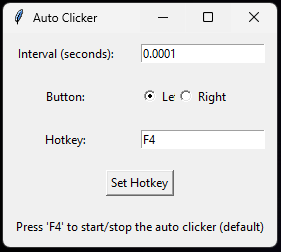

Desktop/Mobile Applications
Auto Clicker
A Python desktop utility with configurable click intervals, mouse buttons, and a start/stop hotkey.
Overview
A desktop auto-clicking project described in the development Blog. Its interface lets users configure repeated mouse clicks and a global hotkey.

Key features
- Configure the interval between clicks.
- Choose the mouse button to use.
- Customize the start/stop hotkey, with F4 described as the default.
- Run clicking on a separate thread so the interface remains responsive.
Development notes
- This is desktop software, not an application that runs inside this website.
- The source repository is available. No separate executable download is advertised here.